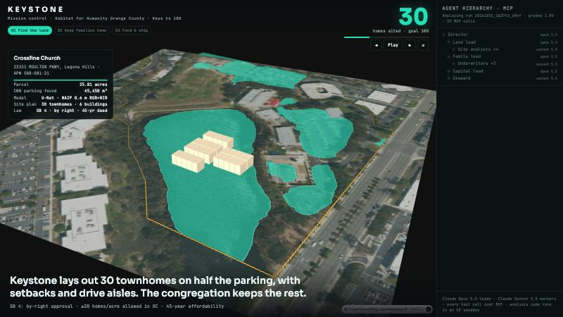
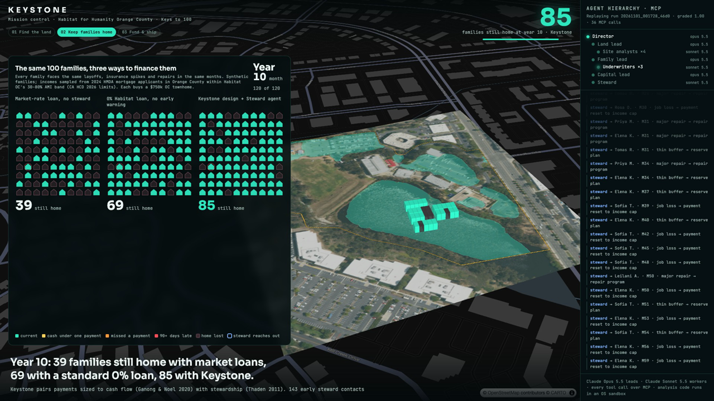

An agent-run system that finds buildable faith-owned land with a CNN, designs mortgages families can keep through a decade of shocks, and sizes the capital gap on real lending data. Its models and agents improve only when a deterministic gate confirms they got better.
Keystone finds buildable land, designs mortgages families can keep, and keeps them in their homes. A team of AI agents does the work, and a small affiliate staff supervises it. The first customer is a Habitat affiliate (affiliates operate in all 50 states, DC and Puerto Rico). Next come the 314 land trusts and shared-equity programs in 46 states, and the lenders behind them. The wedge is faith land: California's SB 4 makes it buildable by right, Florida passed its own version in 2025, and bills are pending in about ten more states. Each new state needs a region config file, not new code.


| Module | What a staff member gets | AI under the hood |
|---|---|---|
| Land Radar | Ranked faith parcels, CNN scan, generated site plan, congregation letter | U-Net CNN, lattice site planner, Land lead and Site-analyst agents |
| Mortgage Designer | A term sheet per family that keeps P(still home at year 10) ≥ 95% | Monte Carlo optimizer; Underwriter agents stress-test in the sandbox |
| HomeKeeper | Watchlist of homeowners under strain before a missed payment, with a workout and an outreach draft for each | Steward agent; a human approves every message |
| Capital Planner | Per-home waterfall, sensitivity range, CalHome and AHP drafts | HMDA model with a fairness gate; Capital lead agent |
| Agent Console + MCP | Mission control and graded traces, plus an MCP endpoint for Claude Desktop, Claude Code or any MCP host | Director → leads → workers; gated self-improvement |
KEYSTONE_REGION picks the market.Habitat OC has built 239 homes since 1988 and set out in November 2024 to build 100 more (Keys to 100). Three constraints stand in the way: land in a county where the median house costs $1.48 million, capital tied up in 0% mortgages, and the risk that a family who closes can't keep the home. More than half of low-income first-time buyers nationally return to renting within five years (Reid 2005).
Real lending data shows where the market breaks. In 2024, 1,458 Orange County households earning 80% of area median income or less applied for a home-purchase mortgage. A quarter were denied, and debt-to-income was the reason on 59% of those denials.
The Land lead caps any one site at 30 units. Agents learned this rule themselves after a grader flagged the first plan for putting all 100 homes on one campus. With 70% of the parking kept, the four sites together still hold 272 units. SB 4 lets these parcels build by right at 30 units per acre or more in Orange County, with a 45-year affordability restriction on ownership units (HCD fact sheet).
| Site | City | APN | CNN parking (m²) | Units, 50% parking kept | Units, 70% kept | Allocated |
|---|---|---|---|---|---|---|
| Crossline Church | Laguna Hills | 588-081-21 | 45,292 | 120 | 85 | 30 |
| Mariners Church Worship Center | Irvine | 478-234-05 | 31,494 | 104 | 79 | 30 |
| Needham Chapel | Costa Mesa | 419-151-13 | 29,108 | 86 | 63 | 30 |
| Friends Church | Yorba Linda | 343-491-29 | 30,705 | 70 | 45 | 30 |
An OSM place of worship does not prove faith ownership. Needham Chapel sits on a college campus, which SB 4 also covers. Every site needs a title check and a fire- and flood-zone screen before outreach. Across the county, viable sites cluster in Anaheim (19), Orange (15), Irvine (14) and Westminster (14). The Terner Center's statewide inventory counts 1,907 developable faith-owned acres in Orange County (SB4-Analysis).
Default is driven by liquidity, not equity. Cutting payments reduced default where cutting principal did not (Ganong & Noel 2020), and halving a payment cuts the delinquency hazard by about 55% (Fuster & Willen 2017). Stewarded community-land-trust loans ran at 1.3% serious delinquency against 8.6% in the market (Thaden 2011). Keystone therefore optimizes the monthly payment and keeps a steward in the loop.
| Family (example applicants) | Income | % AMI | P(market denial) | Chosen design | P(owns at yr 10) | Under stress | Subsidy PV |
|---|---|---|---|---|---|---|---|
| Garcia · 4 · warehouse + childcare | $92,000 | 66% | 94% | 4% · 40 yr · 35% cap · income-indexed | 99.2% | 98.7% | $152,801 |
| Nguyen · 3 · nurse aide | $71,000 | 57% | 94% | 4% · 40 yr · 35% cap · income-indexed | 99.5% | 99.1% | $212,896 |
| Okafor · 5 · rideshare + retail | $108,000 | 72% | 92% | 4% · 40 yr · 35% cap · income-indexed | 97.5% | 95.9% | $107,014 |
The stress test multiplies job-loss risk by 1.5 and raises the yearly insurance-shock probability to 15%; it runs as agent-written code in the sandbox. For the Garcia family, the same home with a market-rate first mortgage and no steward gives 85.6%. Families are illustrative and hazard rates are assumptions, because no public Habitat loan-performance data exists.
Each townhome costs about $539,000 to build at an assumed $375 per square foot, with land contributed through SB 4. The buyer's 0% first mortgage has a face value of $519,000 but is worth $269,000 at a 5% discount rate. That difference is why 0% lending ties up capital. After an assumed $100,000 per home from CalHome and FHLBank SF AHP, the gap is $162,907 per home.
| Hard cost / sf | Discount 4% | 5% | 6% |
|---|---|---|---|
| $325 | $5.8M | $9.1M | $11.9M |
| $375 | $12.9M | $16.3M | $19.1M |
| $425 | $20.1M | $23.5M | $26.3M |
Philanthropy needed for 100 homes. The Capital lead ran this sweep in the sandbox. Per-unit public funding and hard cost are planning assumptions.
Keystone runs one promotion rule for everything it learns: a challenger replaces the champion only if it beats it on the same frozen evaluation and passes its guardrails. Agents can propose changes but never approve their own. The approach follows validation-gated governance (Lim et al. 2026), Reflexion lesson memory (Shinn et al. 2023) and a Voyager-style skill library (Wang et al. 2023).
| What learned | Evidence | Gate decision |
|---|---|---|
| HMDA denial model, as each new year arrived | AUC on newest year: 0.761 → 0.779 → 0.782. Race-group calibration gap 0.019 → 0.014 → 0.006 | promoted ×2 |
| Parking CNN challenger (wider, 40 epochs) | IoU 0.5463 vs 0.5437: +0.003, within noise on 136 holdout chips | rejected |
| Director, Land and Capital playbooks | Mean grader score across 3 missions: 0.67 → 1.00. Lessons learned: cap sites at 30 units, run the sensitivity sweep, report fairness | promoted |
| Underwriter skill library | A sandbox stress test saved once, then reused by later runs | reused |
| Capability | How Keystone does it | Grounding |
|---|---|---|
| Agent hierarchy | Director → 3 leads → workers, with parallel delegation, a progress ledger and least-privilege tools. Leads run on Claude Opus 5.5 and workers on Claude Sonnet 5.5, both with adaptive thinking | Anthropic 2025, Magentic-One |
| MCP | One Keystone server with 13 namespaced tools and 2 resources, over stdio or Streamable HTTP. It also plugs into Claude Desktop and Claude Code | MCP spec 2026-07-28 |
| Sandbox | Agent-written Python runs under macOS seatbelt or Linux bubblewrap, with no network, writes only to its own folder, and secrets scrubbed. Red-team tests pass | Anthropic 2025, code execution with MCP |
| CNN | U-Net on NAIP RGB + NIR + NDVI, weakly supervised by OSM | Qiam et al. 2024, Jo et al. 2025 |
| Simulate and optimize | Household Monte Carlo inside a design search | Ardon et al. 2024 |
| Fair ML | Protected attributes excluded, with a calibration-gap guardrail on promotion | Fuster et al. 2022 |
| Evals | Code graders on final state across 3 missions, with transcripts kept for review | τ-bench, Anthropic 2026 |